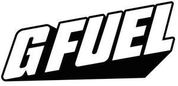

Trade Mark Journal No.2025/036 5 September 2025
UK00004232362 11 July 2025 (5,9,18,21,25,32,35)

International priority date claimed: 14 January 2025
(United States of America)
(98960908)
- Class 5
- Dietary and nutritional supplements; powdered nutritional supplement drink mixes to boost energy; nutrition drink powders, namely, powdered nutritional supplement drink mixes; non-medical and non-pharmaceutical powdered nutritional supplement drink mixes to boost energy; non-medical and non-pharmaceutical nutrition drink powders, namely, powdered nutritional supplement drink mixes; non-medical and non-pharmaceutical dietary and nutritional supplements; non-medical and non-pharmaceutical powdered nutritional supplement drink mixes to boost energy for video and computer game players, esport players, mobile gaming players, drone racing players, and anime, pop culture, and fitness fans; non-medical and non-pharmaceutical nutrition drink powders, namely, powdered nutritional supplement drink mixes for video and computer game players, esport players, mobile gaming players, drone racing players, and anime, pop cult ure, and fitness fans; non-medical and non-pharmaceutical dietary and nutritional supplements for video and computer game players, esport players, mobile gaming players, drone racing players, and anime, pop culture, and fitness fans.
- Class 9
- Downloadable computer software and downloadable computer software applications for viewing, browsing, shopping, tracking orders, receiving push notifications, receiving discount offers, locating stores, and purchasing real, non-virtual consumer products, namely, dietary and nutritional supplements, powdered nutritional supplement drink mixes to boost energy, nutrition drink powders, namely, powdered nutritional supplement drink mixes, non-medical and non-pharmaceutical powdered nutritional supplement drink mixes to boost energy, non-medical and non-pharmaceutical nutrition drink powders, namely, powdered nutritional supplement drink mixes, non-medical and non-pharmaceutical dietary and nutritional supplements, non-alcoholic drinks and beverages, non-alcoholic energy drinks and beverages, non-alcoholic functional drinks and beverages, carbonated and non-carbonated energy drinks and beverages and functional drinks and beverages, energy drinks and beverages enhanced with vitamins, electrolytes, and antioxidants, nutritional energy drink powders, sports and isotonic sports drinks and beverages, dietary and nutritional supplements, powdered nutritional supplement drink mixes to boost energy, nutrition drink powders, namely, powdered nutritional supplement drink mixes, shaker cups and metal shaker cups for drinks, powdered drink, beverages, and energy boosting mixes, dietetic, sugar-free, and caffeine-free beverages, namely, flavored carbonated and non-carbonated energy drinks, sodas, and soft drinks, mousepads, magnetically encoded gift cards, clothing and apparel, namely, t-shirts, crewneck shirts, long-sleeve shirts, short-sleeve shirts, sweatshirts, hooded sweatshirts, sweaters, jerseys, tank tops, exercise shirts, exercise pants, headwear, hats, caps, baseball caps, footwear, sneakers, and socks, sports bags, backpacks, tote bags, knapsacks, book bags, and handbags, shaker bottles sold empty, lunchboxes, cups, mugs, coffee mugs, shot glasses, beverage glassware, beverage stirrers, sports equipment, pickleball paddles and balls, exercise, fitness, and workout equipment, manually operated apparatus for hand and finger exercises, hand engaging exercising apparatus for improving dexterity, strength, and range of motion in the fingers and hands, toys, games, posters, flags, snack foods, candy, sugarless, low-sugar, and gluten-free snack foods, chocolate-based ready to eat candies, cookies, energy bars, non-medicated candy and nonmedicated candy confectionery made with powdered energy mixes, powdered nutritional mixes, and functional hydration mixes containing caffeine and/or citicoline for focus, cognition, and memory, beverages and drinks, concentrates, syrups, and powders for use in the preparation of non-alcoholic beverages and drinks, namely, energy drinks and beverages, functional and isotonic drinks and beverages, and soft drinks, namely, soda, sports energy drinks and energy drinks containing vitamins, nutritional supplements, electrolytes, caffeine, and antioxidants, fruit juice beverages and drinks, fruit-based beverages and drinks, fruit flavored beverages and drinks, water-based beverages and drinks, cola beverages and drinks, sparkling fruit juice beverages and drinks, flavored carbonated and non-carbonated and non-flavored dietetic, sugar-free, and caffeine-free energy drinks, isotonic drinks, isotonic sports drinks, and soft drinks, namely, sodas, isotonic sports drinks and beverages, functional drinks and beverages enhanced with vitamins, nutritional supplements, electrolytes, caffeine, and antioxidants, protein and nutrient enhanced functional sports drinks and beverages, dietetic, sugar-free, and caffeine-free beverages, namely, flavored carbonated and non-carbonated energy drinks, isotonic energy drinks, sodas, and soft drinks.
- Class 18
- Sports bags, backpacks, tote bags, knapsacks, book bags, and handbags.
- Class 21
- Shaker bottles sold empty, lunchboxes, cups, mugs, coffee mugs, shot glasses, beverage glassware, and beverage stirrers.
- Class 25
- Clothing and apparel, namely, t-shirts, shirts, crewneck shirts, long-sleeve shirts, short-sleeve shirts, sweatshirts, hoodies, hooded sweatshirts, sweaters, jerseys, tank tops, exercise shirts, exercise pants, headwear, hats, caps, baseball caps, footwear, sneakers, and socks.
- Class 32
- Concentrates, syrups, and powders for use in the preparation of non-alcoholic beverages and drinks, namely, energy drinks, functional drinks and beverages enhanced with vitamins, nutritional supplements, electrolytes, caffeine, and antioxidants, and functional beauty drinks and beverages, namely, isotonic drinks, sports energy drinks, and energy drinks containing vitamins, nutritional supplements, electrolytes, caffeine, and antioxidants, not for dietary or medical purposes; concentrates, syrups, and powders for use in the preparation of non-alcoholic beverages and drinks, namely, fruit juice beverages and drinks, fruit-based beverages and drinks, fruit flavored beverages and drinks, water-based beverages and drinks, cola beverages and drinks, sparkling fruit juice beverages and drinks, and non-alcoholic relaxation drinks, namely, non-carbonated soft drinks, not for dietary or medical purposes; concentrates, syrups, and powders for use in the preparation of non-alcoholic beverages and drinks, namely, flavored carbonated and noncarbonated beverages and drinks, flavored isotonic drinks, flavored isotonic sports drinks and beverages, and flavored soft drinks, namely, soda, not for dietary or medical purposes; non-alcoholic carbonated and non-carbonated energy drinks, functional drinks and beverages enhanced with vitamins, nutritional supplements, electrolytes, caffeine, and antioxidants and functional beauty drinks and beverages, namely, isotonic drinks, sports energy drinks, and energy drinks containing vitamins, nutritional supplements, electrolytes, caffeine, and antioxidants, not for dietary or medical purposes; non-alcoholic carbonated and non-carbonated beverages and drinks, namely, fruit juice beverages and drinks, fruit-based beverages and drinks, fruit flavored beverages and drinks, water-based beverages and drinks, cola beverages and drinks, sparkling fruit juice beverages and drinks, and non-alcoholic relaxation drinks, namely, noncarbonated soft drinks, not for dietary or medical purposes; non-alcoholic carbonated and non-carbonated flavored energy drinks, flavored functional drinks and beverages enhanced with vitamins, nutritional supplements, electrolytes, caffeine, and antioxidants, and flavored functional beauty drinks and beverages, namely, flavored isotonic drinks, flavored sports energy drinks, and flavored energy drinks containing vitamins, nutritional supplements, electrolytes, caffeine, and antioxidants, not for dietary or medical purposes; nonalcoholic carbonated and non-carbonated flavored beverages and drinks, namely, flavored fruit juice beverages and drinks, flavored fruit-based beverages and drinks, flavored fruit flavored beverages and drinks, flavored water-based beverages and drinks, flavored cola beverages and drinks, flavored sparkling fruit juice beverages and drinks, and flavored non-alcoholic relaxation drinks, namely, non-carbonated soft drinks, not for dietary or medical purposes; flavored carbonated and non-carbonated and non-flavored dietetic, sugar-free, and caffeine-free energy drinks, isotonic drinks, isotonic sports drinks, and soft drinks, namely, sodas, not for dietary, medical or veterinary purposes; energy drinks and beverages enhanced with vitamins, electrolytes, and antioxidants; energy drink powders; nutritional energy drink powders, namely, powders used in the preparation of energy drinks; powders used in the preparation of sports energy and energy drinks; powders used in the preparation of isotonic sports drinks and sports beverages; non-medical and non-pharmaceutical energy drink powders; non-medical and non-pharmaceutical powders used in the preparation of isotonic sports drinks and beverages, functional drinks and beverages enhanced with vitamins, nutritional supplements, electrolytes, caffeine, and antioxidants, and protein and nutrient enhanced functional sports drinks and beverages; dietetic, sugar-free, and caffeine-free beverages, namely, flavored carbonated and non-carbonated energy drinks, isotonic energy drinks, sodas, and soft drinks; nonmedical and non-pharmaceutical energy drink and beverage powders for video and computer game players, esport players, mobile gaming players, drone racing players, and anime, pop culture and fitness fans; nutritional energy drink powders, namely, powders used in the preparation of energy drinks and beverages for video and computer game players, export players, mobile gaming players, drone racing players, and anime, pop culture and fitness fans; powders used in the preparation of sports and energy drinks for video and computer game players, esport players, mobile gaming players, drone racing players, and anime, pop culture and fitness fans; nonmedical and non-pharmaceutical powders used in the preparation of isotonic sports drinks and sports beverages for video and computer game players, esport players, mobile gaming players, drone racing players, and anime, pop culture and fitness fans.
- Class 35
- Online retail store services connected with the sale of dietary and nutritional supplements, powdered nutritional supplement drink mixes to boost energy, nutrition drink powders, namely, powdered nutritional supplement drink mixes, non-medical and non-pharmaceutical powdered nutritional supplement drink mixes to boost energy, non-medical and non-pharmaceutical nutrition drink powders, namely, powdered nutritional supplement drink mixes, non-medical and non-pharmaceutical dietary and nutritional supplements, non-alcoholic drinks and beverages, non-alcoholic energy drinks and beverages, non-alcoholic functional drinks and beverages, carbonated and noncarbonated energy drinks and beverages and functional drinks and beverages, energy drinks and beverages enhanced with vitamins, electrolytes, and antioxidants, nutritional energy drink powders, sports and isotonic sports drinks and beverages, dietary and nutritional supplements, powdered nutritional supplement drink mixes to boost energy, nutrition drink powders, namely, powdered nutritional supplement drink mixes, shaker cups and metal shaker cups for drinks, beverages, and powdered drink, beverage, and energy boosting mixes, dietetic, sugar-free, and caffeine-free beverages, namely, flavored carbonated and non-carbonated energy drinks, sodas, and soft drinks; online retail store services connected with the sale of mousepads and magnetically encoded gift cards; online retail store services connected with the sale of clothing and apparel, namely, t-shirts, crewneck shirts, long-sleeve shirts, short-sleeve shirts, sweatshirts, hooded sweatshirts, sweaters, jerseys, tank tops, exercise shirts, exercise pants, headwear, hats, caps, baseball caps, footwear, sneakers, and socks; online retail store services connected with the sale of sports bags, backpacks, tote bags, knapsacks, book bags, and handbags; online retail store services connected with the sale of shaker bottles sold empty, lunchboxes, cups, mugs, coffee mugs, shot glasses, beverage glassware, and beverage stirrers; online retail store services connected with the sale of sports equipment, pickleball paddles and balls, exercise, fitness, and workout equipment, manually operated apparatus for hand and finger exercises, and hand engaging exercising apparatus for improving dexterity, strength, and range of motion in the fingers and hands; online retail store services connected with the sale of toys, games, posters, and flags; online retail store services connected with the sale of snack foods, candy, sugarless, low-sugar, and gluten-free snack foods, chocolate-based ready to eat candies, cookies, energy bars, non-medicated candy and non-medicated candy confectionery made with powdered energy mixes, powdered nutritional mixes, and functional hydration mixes containing caffeine and/or citicoline for focus, cognition, and memory, concentrates, syrups, and powders for use in the preparation of non-alcoholic beverages and drinks, namely, energy drinks and beverages, functional and isotonic drinks and beverages, and soft drinks, namely, soda, sports energy drinks, and energy drinks containing vitamins, nutritional supplements, electrolytes, caffeine, and antioxidants, fruit juice beverages and drinks, fruit-based beverages and drinks, fruit flavored beverages and drinks, water-based beverages and drinks, cola beverages and drinks, sparkling fruit juice beverages and drinks, flavored carbonated and non-carbonated and non- flavored dietetic, sugar-free, and caffeine-free energy drinks, isotonic drinks, isotonic sports drinks, and soft drinks, namely, sodas, isotonic sports drinks and beverages, functional drinks and beverages enhanced with vitamins, nutritional supplements, electrolytes, caffeine, and antioxidants, protein and nutrient enhanced functional sports drinks and beverages, and dietetic, sugar-free, and caffeine-free beverages, namely, flavored carbonated and non-carbonated energy drinks, isotonic energy drinks, sodas, and soft drinks.
G Fuel, LLC
Representative: Withers & Rogers LLP